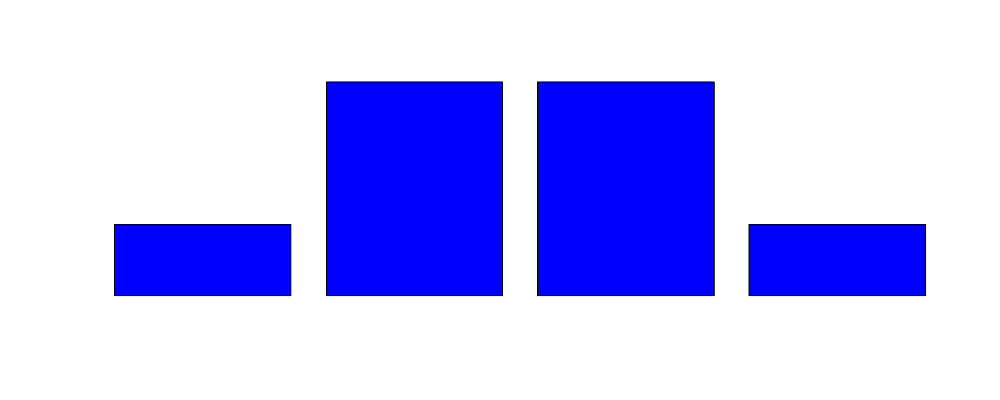
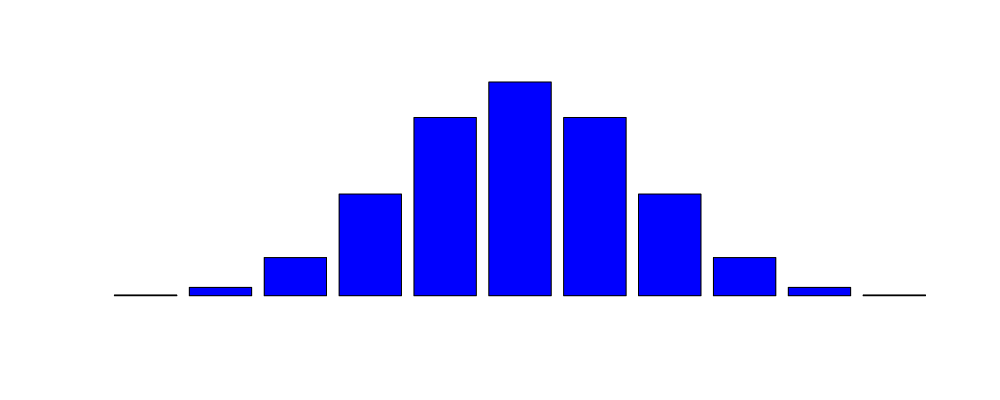
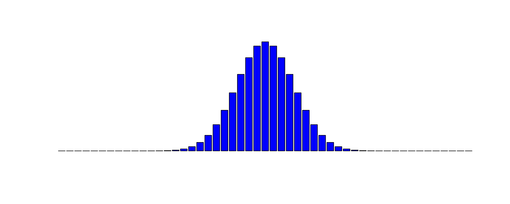
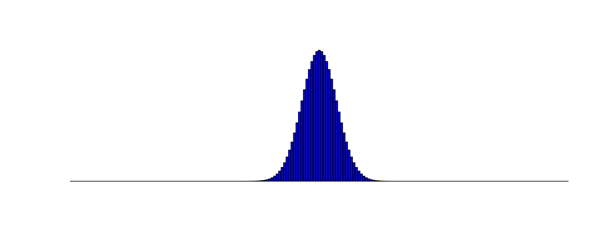
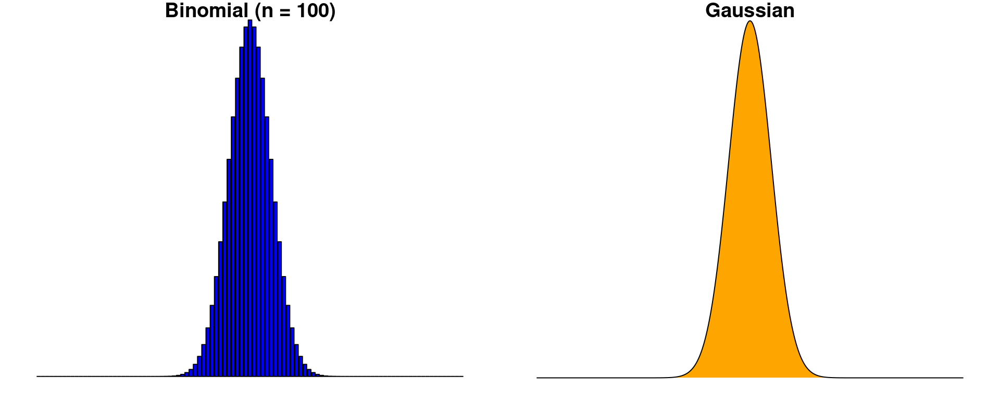
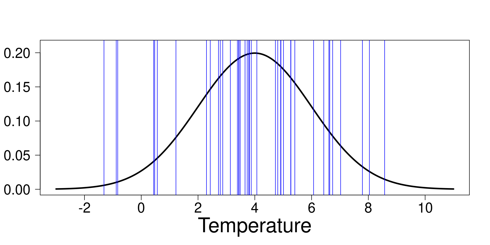
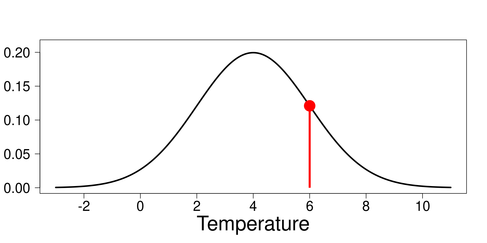
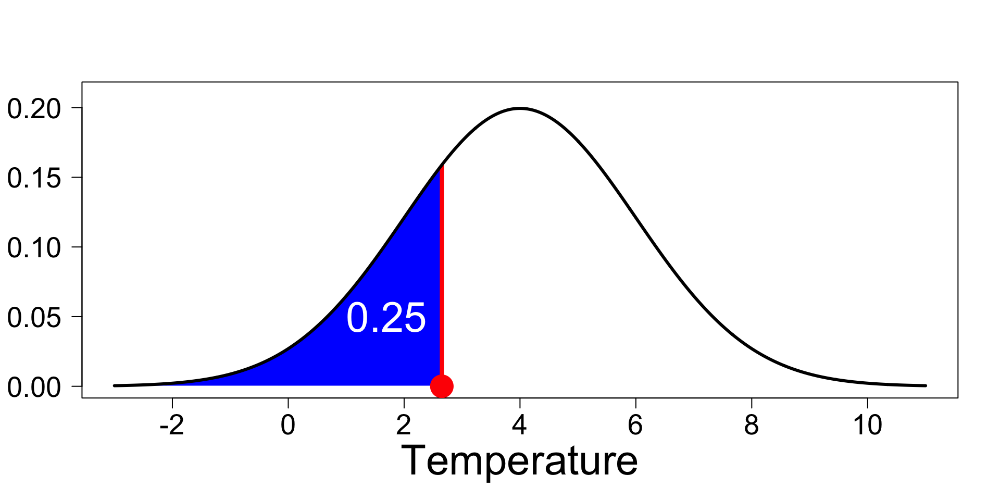
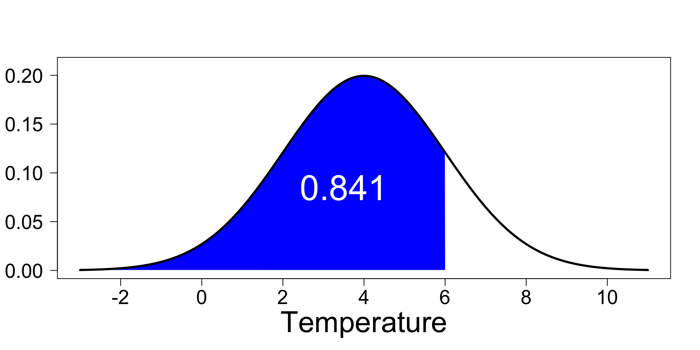

Probability Distribution
Probabilities
To understand distributions, we first need to have a basic understanding of probabilities.
A bit of history
Unlike many other fields of science, the first contributors in the study of probability were not scholars, they were gamblers !
. . .
For example, the emperor Claudius (10 BC – 54 AD), who was an avid gambler (he had a carriage built to allow him and his party to gamble while travelling) wrote a treatise on randomness and probability.
A bit of history
If you want a fun book to read about probabilities, its history and the difficulty of working with probabilities, I strongly recommend

The basics of probabilities
A probability ALWAYS ranges between 0 and 1
. . .
A probability of 0 means that an event is impossible
. . .
Example: The probability that a dog and a cat naturally reproduce is 0
. . .
A probability of 1 means that an event is certain
. . .
Example: The probability that you are in this summer school as we speak is 1
The basics of probabilities
Notation
A classic way to write the probability of an event is to use the notation \(P\).
. . .
Example

The probability that it rains as you walk outside after the lecture is written as
\[P(r)\] where \(r\) is the event you are interested in. Here, \(r\) is whether it rains as you walk outside after the lecture today
Probabilities and events
When dealing with discrete (countable) events, it is very practical to know the number of events that can occur.
. . .
In the simplest case, we can either measure the probability of an event to occur or not.
. . .
Example
It can either rain or not. Mathematically, the probability that it rains is written as
\[P(r)\] and the probability that it does not rain would be written as
\[1 - P(r)\]
Probabilities and events
Usually, these basic notions of probabilities are presented using coin flipping. When a coin is flip, it is usually assumed that
\[P(r)=0.5\]
. . .
However, in probability theory, P(r) can have any value ranging between 0 and 1.
. . .
Example
What do you think is the probability that it will rain at the end of the lecture?
Probabilities and events
At this point we can note that when we add the probabilites of all possible events, the sum will always be 1
. . .
Example
\[P(r) + (1-P(r)) = 1\]
. . .
This is true only if the events are independent from each other
Independent !?
Events that are independent from each other means that the if an event occurs it is in no way related to the occurrence of another event.
. . .
Example
If we assume that weather events like a rainy day are independent from one another, it means that if it rains today it is unrelated to the weather of yesterday or tomorrow.
. . .
Note : This can be a good or a bad or dangerous assumption to make depending on the problem you are working on.
Bernoulli distribution

Jacob Bernoulli (1655 - 1705)
Bernoulli distribution
The probability distribution (or probability mass function) of the Bernoulli distribution defines the probability of an event to occur given that there is only one other event that can occur (e.g. rain or no rain)
. . .
Classically, we will give a value of 1 to one event (no rain) and 0 to the other (rain).
. . .
From a mathematical perspective, it does not matter which event is given a 1 (or a 0). However, often it is common practice to choose how we give values based on the interpretation we make of the results.
Bernoulli distribution
Mathematically, the probability mass function of the Bernoulli distribution can be written as
\[\begin{align*} p \quad & \text{if} \quad x =1\\ (1-p) \quad & \text{if}\quad x =0 \end{align*}\]
where \(p\) is a shorthand for \(P(x)\) and \(x\) is one of two events.
Moment interlude
Using probability distributions is practical because from them we can derive general information characterizing the each distribution.
. . .
These characteristics are know as moments of a distribution… And you know them :
. . .
- Mean
- Variance
- Skewness
- Kurtosis
- …
Moments of the Bernoulli distribution
For the sake of conciseness, in this course, we will discuss only the first two moments of distributions.
Mean
\[p\]
Example
If the probability that it rains is \(p=0.14\) in any given day, it means that, on average in a week (7 days) we should expect it will rain 1 day.
Moments of the Bernoulli distribution
Variance
\[p(1-p)\] Example
If the probability that it rains is \(p=0.5\) in any given day, it means that, across multiple weeks, some weeks might have no rain while some weeks it might rain all days because the variance is
\[p(1-p)=0.5\times(1-0.5)=0.25\quad\text{and}\quad \sqrt{0.25} = 0.5\]
Moments of the Bernoulli distribution
If you want to go deeper down and learn about the other moments of the Bernoulli distribution (as well as other aspect of the distribution), take a look at the Wikipedia page of the Bernoulli distribution
Let’s make it more complicated
So far, we focused on a situation where the two events to consider either occur or not.
. . .
There are many problems were interest lies in studying the likeliness of an event occurring over a known number of independent trials.
. . .
Example
How many rainy day will there be during the five days of our summer school ?
Binomial distribution
Put differently, the binomial distribution is designed to approach questions where we are interested in finding the number of success (e.g. it rains !) out of a known set of independent trials (e.g. the five days of the summer school).
. . .
The binomial distribution is a generalisation of the Bernoulli distribution
. . .
It is a common distribution used when sampling is done with replacement
. . .
Let’s take a look at the math of the Binomial distribution
Binomial distribution
Probability mass function
\[\binom{n}{k}p^k(1-p)^{n-k}\]
where
- \(n\) : Number of trails
- \(k\) : Number of success (an event occurs)
- \(p\) : Probability that an event occurs
Note that \(n \ge k\)
Mathematical technicalities interlude
\[\binom{n}{k}\]
. . .
\[\frac{n!}{k!(n-k)!}\]
. . .
\[\frac{n\times(n-1)\times(n-2)\times\dots\times 2\times 1}{(k\times(k-1)\times(k-2)\times\dots\times 2\times 1)(n-k)\times(n-k-1)\times(n-k-2)\times\dots\times 2\times 1}\]
Moment of the binomial distribution
Again, for conciseness, we will focus on the first moment (mean) and second moment (variance) of the binomial distribution.
. . .
Mean \[np\]
. . .
Example
If the probability that it rains is \(p=0.14\) in any given day of the 5 days of the summer school, it means that on average we expect it will rain 0.7 days of the summer school (so 1 or no days)
\[np = 5 \times 0.14 = 0.7\]
Moment of the binomial distribution
Variance
\[np(1-p)\]
. . .
Example
If the probability that it rains is \(p=0.5\) in any given day, it means that, across multiple weeks (7 days), roughly speaking some weeks might have 1 days of rain while others might have 5 because the variance is
\[np(1-p)=7 \times 0.5\times(1-0.5)=1.75\quad\text{and}\quad \sqrt{1.75} = 1.3229\]
Moments of the binomial distribution
If you want to learn more about the other moments of the binomial distribution (as well as other aspect of the distribution), take a look at the Wikipedia page of the binomial distribution
Binomial distribution
The binomial distribution is related to many other probability distribution
. . .
- Bernoulli distribution (as we have seen)
. . .
- Poisson distribution (when there are an infinite number of trials while \(np\) converge to a finite value)
. . .
- Normal distribution…
. . .

Jia Xian triangle

Pascal’s triangle

Pascal’s triangle

Pascal’s triangle
The Pascal’s triangle is directly related to the binomial distribution with \(p=0.5\).
. . .
If \(n = 3\)
When \(k=0\)
\[\binom{n}{k}p^k(1-p)^{n-k}=\binom{3}{0}\times0.5^0 \times (1-0.5)^{(3-0)}=0.125\]
. . .
When \(k=1\)
\[\binom{n}{k}p^k(1-p)^{n-k}=\binom{3}{1}\times0.5^1 \times (1-0.5)^{(3-1)}=0.375\]
. . .
When \(k=2\)
\[\binom{n}{k}p^k(1-p)^{n-k}=\binom{3}{2}\times0.5^1 \times (1-0.5)^{(3-2)}=0.375\]
. . .
When \(k=3\)
\[\binom{n}{k}p^k(1-p)^{n-k}=\binom{3}{3}\times0.5^1 \times (1-0.5)^{(3-3)}=0.125\]
Pascal’s triangle
The Pascal’s triangle is directly related to the binomial distribution with \(p=0.5\).
If \(n = 3\)
. . .

Pascal’s triangle
The Pascal’s triangle is directly related to the binomial distribution with \(p=0.5\).
If \(n = 10\)
. . .

Pascal’s triangle
The Pascal’s triangle is directly related to the binomial distribution with \(p=0.5\).
If \(n = 50\)
. . .

Pascal’s triangle
The Pascal’s triangle is directly related to the binomial distribution with \(p=0.5\).
If \(n = 200\)
. . .

Binomial and Gaussian distribution
If the number trials (\(n\)) is large enough, it approximate to a Gaussian distribution

Gaussian (Normal) distribution

Carl Friedrich Gauss (1777-1855)
Gaussian (Normal) distribution
Unlike the binomial distribution, the Gaussian distribution is a continuous distribution
. . .
It is the a very common distribution that is underlying many random natural phenomenon and it is the basis of statistical theory
. . .
Let’s take a look at the mathematical formulation of the Gaussian distribution
Gaussian (Normal) distribution
Probability density function
\[\frac{1}{\sigma\sqrt{2\pi}} e^{-\frac{1}{2}\left(\frac{x - \mu}{\sigma}\right)^2}\]
where
- \(x\) : continuous variable of interest
- \(\mu\) : The mean of the distribution
- \(\sigma\) : The standard deviation of the distribution
Moment of the Gaussian distribution
Mean
\[\mu\]
Example

Let’s say we measure the length of the left wing of individual of this species of (angry) birds, it is expected that the wing length will follow a Gaussian distribution with a mean of \(\mu\). We will look at this in more details in the practical exercices later today.
Moment of the Gaussian distribution
Variance
\[\sigma^2\]
Example
Let’s say we measure the length of the left wing of individual of this species of (angry) birds, it is expected that the wing length will follow a Gaussian distribution with a variance of \(\sigma^2\). We will look at this in more details in the practical exercices later today.
General properties of distributions
In R, there are 4 functions associated to every distribution. As an example, for the Gaussian distribution, they are
rnormdnormpnormqnorm
. . .
Knowing what these functions do will be very useful for this course
rnorm
The r in rnorm is for random
. . .
This function allows us to randomly sample directly from the distribution of interest.
. . .
Example

Let’s assume that we look at the historical record and gather the minimum temperature measured on today’s date for the past 40 years. This data can be assumed to be a random sample of 40 temperature measurements with an average of \(4^{\circ}C\) and a standard deviation of \(2^{\circ}C\). We can simulate these values as follow
rnorm(40, mean = 4, sd = 2)rnorm(40, mean = 4, sd = 2)

dnorm
The d in dnorm is for density
. . .
This function gives the height of the distribution for a chosen value.
. . .
Example
If we assume that the average temperature at this time of the year is \(4^{\circ}C\) with a standard deviation of \(2^{\circ}C\), we can calculate that the likeliness that a temperature of \(6^{\circ}C\) to occur is
dnorm(6, mean = 4, sd = 2)[1] 0.1209854dnorm(6, mean = 4, sd = 2)

qnorm
The q in qnorm is for quantile
. . .
This function gives the value of the distribution given a certain density
. . .
Example
If we assume that the average temperature at this time of the year is \(4^{\circ}C\) with a standard deviation of \(2^{\circ}C\), qnorm allows us to calculate the temperature expected to be obtained at the lowest quartile (1/4). It is calculate as
qnorm(0.25, mean = 4, sd = 2)[1] 2.65102qnorm(0.25, mean=4, sd=2)

pnorm
The p in pnorm is for probability distribution function
. . .
This function gives the integral (area under the curve) up to a specified value.
. . .
This is particularly useful because it informs us about the probability that an event is likely to occur (of course assuming a it follows a normal distribution).
pnorm
Example
If we assume that the average temperature at this time of the year is \(4^{\circ}C\) with a standard deviation of \(2^{\circ}C\), pnorm will tell us that the probability to have a temperature lower or equal to \(6^{\circ}C\). This is calculated as
pnorm(6, mean = 4, sd = 2)[1] 0.8413447pnorm(6, mean = 4, sd = 2)

Binomial and Bernoulli distribution
As I mentionned previsouly, these function are available in base R for a large number of distributions.
Binomial distribution
rbinomdbinomqbinompbinom
Bernoulli distribution
However, sometimes we must know a little bit of theory (as I have show today) to use the right function.
rbinomdbinomqbinompbinom

Bernoulli distribution
rbinomdbinomqbinompbinom
With size = 1
Other distributions
Statisticians and biologists have been very, very (!!) creative in proposing new probability distribution for specific problems
. . .
If you want to learn about the diversity of distribution that is out there, take a look at :
https://en.wikipedia.org/wiki/List_of_probability_distributions
. . .
Many of them have been implemented in R, either in base R or specialized packages
. . .
If you want to know if you favourite distribution has been implemented in R take a look at